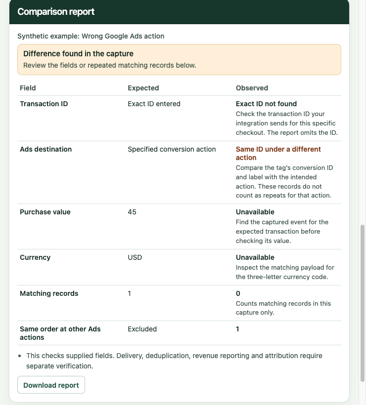

Which Google Ads action did this Shopify purchase target?
Follow one Shopify test order and match its transaction ID to the full Google Ads destination. A tag can fire for a different action even when the one you expected has no matching record in your capture.
1. Find the intended action
In Google Ads, open the purchase conversion action you intend to verify. Where its tag setup shows an event snippet, record the full send_to value, including the conversion ID and the label after the slash. If the destination value is unavailable, mark it as unknown and confirm it with the integration owner before comparing. Google tag setup
2. Inspect one captured event
Use a test order you are authorized to run. Inspect a capture from that same checkout, for example in Tag Assistant where the Google tag is visible, or in the logs from the integration that sends the event. Shopify Pixel Helper can show which custom-pixel events ran in Shopify. For this check, look for the outgoing Ads conversion event. Google Tag Assistant · Shopify Pixel Helper
Record the exact transaction_id from the test implementation, which may differ from the order number displayed in Shopify. If you also compare value and currency, confirm that both values use the same treatment of tax and shipping. Keep customer details, account credentials, cookies and complete logs out of any shared example. Google Ads transaction IDs
3. Compare the transaction and destination
In this synthetic test the intended destination is AW-123456/purchase-main. The captured event for that same test transaction goes to AW-123456/purchase-test.
{
"send_to": "AW-123456/purchase-test",
"transaction_id": "DEMO-1001",
"value": 45,
"currency": "USD"
}The conversion ID matches and the label differs. The capture contains one record for the test transaction under another action and zero matching records under the intended action. The next step is to inspect which integration supplied that label and whether the other action is intentional. If both actions receive the same transaction, inspect their roles separately. Google’s transaction-ID duplicate handling applies within a conversion action. Google Ads duplicate handling

Try this comparison
Open the free checker, select Wrong Google Ads action, and click Load example. The captured fields stay in your browser. Verify Google Ads acceptance, reporting and attribution separately in Google Ads.
Need a fixed-scope human check?
If your Google Ads or GA4 purchase conversion is missing, duplicated, or firing to the wrong action, book a 1-checkout written diagnostic (2 business days, no store password required).